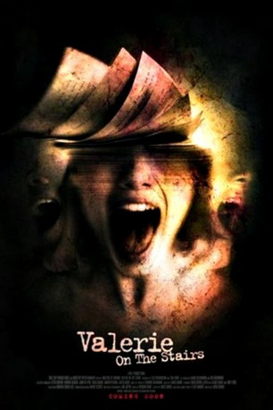

#8906 Masters of Horror S02E08 - Valerie on the Stairs
 
 IMDB-Wertung: 5.7 / 10
IMDB-Wertung: 5.7 / 10  Metascore: 0
Metascore: 0 
Für die Arbeit an seinem neuen romantischen Drama wählt der hoffnungsfrohe Jungschriftsteller Rob Hanisey die Klausur einer innerstädtischen Absteige, die als Stiftung brotlosen Künstler Unterkunft bietet. Schon kurz nach er Ankunft nimmt Rob unheimliche Geräusche war und kommt bald auf die Spur einer geheimnisvollen jungen Frau, die hinter den Wänden des Hauses zu spuken scheint, und über die seine Mitbewohner mehr wissen, als sie zunächst auszupacken bereit sind.
Jahr: 2006
Dauer: 57 Minuten
FSK: 16
Land: USA Studio: Showtime NetworksTonspuren: DTS - ,
Untertitel:
Auflösung: 1080p (1920x1080) Größe: 5232 MB
Genre: Horror
Regisseur: Mick Garris
Drehbuch: Mick Garris
Soundtrack: Richard Band
Darsteller:
Datei: X:\FSK18-Collections\Masters of Horror\Masters of Horror S02E08 - Valerie on the Stairs (2006, FSK16, 1920x1080).mkv seit 04.05.2018
Festplatte: FSK18
 Es gibt insgesamt 30 Filme in der Gruppe 'FSK18-Collections\Masters of Horror'
Es gibt insgesamt 30 Filme in der Gruppe 'FSK18-Collections\Masters of Horror'